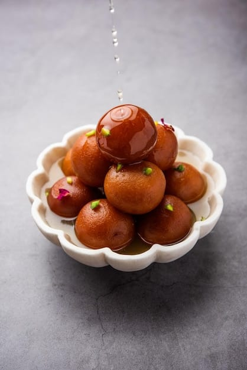
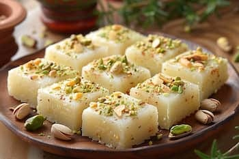
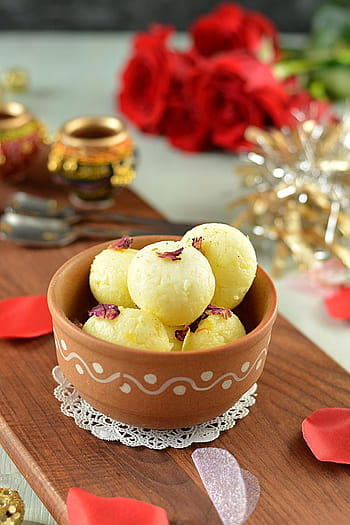
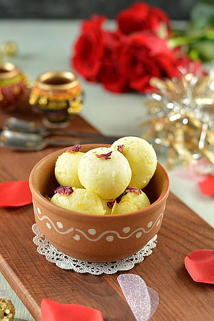
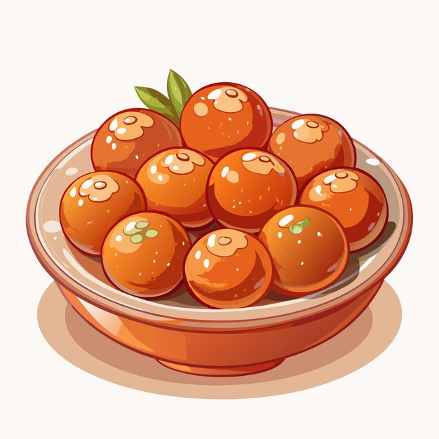
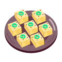

Home
Contact
Login
The Sweet Corner

What We Offer
- Gualbjamun
- Barfi
- Laddu
- Jalebi
- Rasgulla



 

Our Speciality
- 🬠Traditional & Authentic
- 🯠Quality & Freshness Focused
- ğŸ Signature & Unique
- 🰠Emotional & Inviting
Our Mission
- 🬠Traditional & Authentic Style
> Our Mission
To preserve the rich heritage of Indian sweets by crafting every delicacy
with authentic recipes, pure ingredients, and the same love and care that
generations have cherished. We aim to bring the taste of tradition to every
celebration and every hear
- 🯠Quality & Purity Focused
> Our Mission
To deliver the finest quality sweets made from pure ingredients,
ensuring freshness, hygiene, and unmatched taste. We strive to make every bite a
moment of happiness and trust for our customers.
- ğŸ Customer Happiness Focused
> Our Mission
To spread happiness through the sweetness of our creations.
Every sweet we make is a promise of taste, purity, and joy — made to make your
moments more memorable.
Our Menu
Gulabjamun

- 🬠Option 1 – Traditional & Classic
> Gulab Jamun
Soft, golden brown balls made from khoya and soaked in fragrant sugar syrup.
A timeless Indian sweet that melts in your mouth and fills your heart with happiness.
- 🯠Option 2 – Short & Simple
> Gulab Jamun
Sweet, spongy, and soaked in rose-flavored syrup — a perfect treat for every occasion.
Barfi

- 🬠Option 1 – Traditional & Authentic
soft, spongy, and soaked in light sugar syrup — our Rasgullas are a timeless
Bengali delight. Made from fresh chhena and crafted with care, each bite melts in
your mouth and fills your heart with sweetness.
- 🯠Option 2 – Short & Attractive
> Rasgulla
A soft, syrupy, and delicious Bengali sweet made from fresh cottage
cheese — pure joy in every bite!